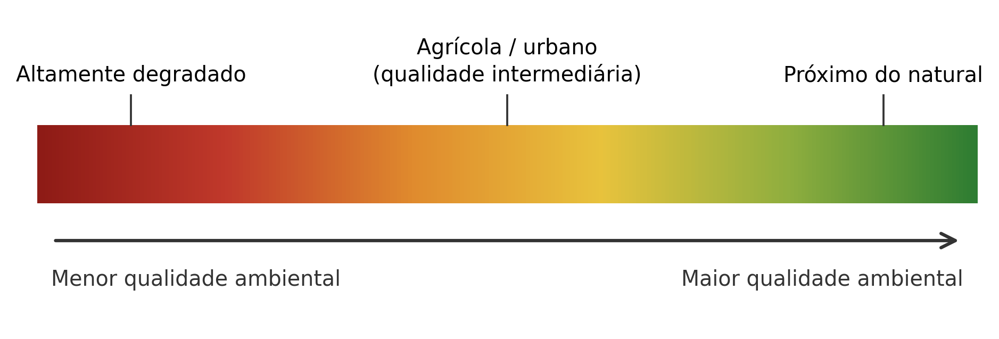
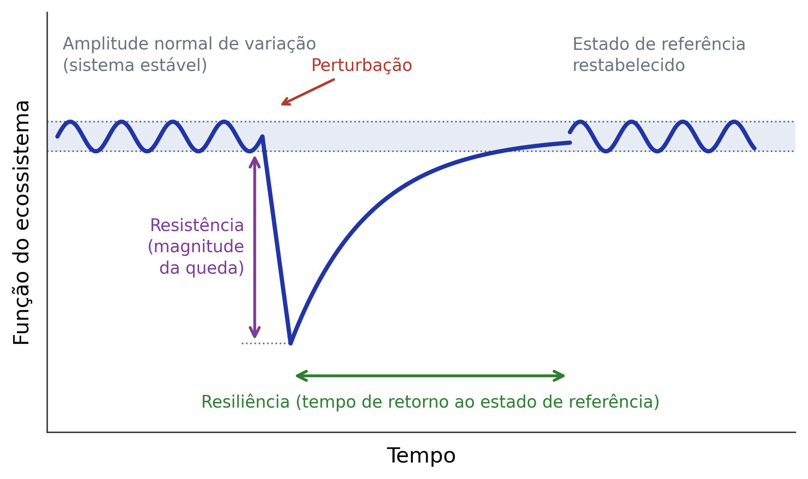
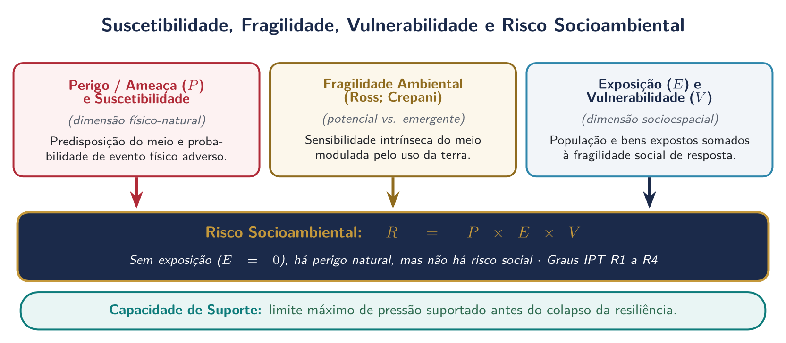

Análise Ambiental · Aula 4.1
Objetivo da Aula
Dominar com rigor técnico e legal o vocabulário conceitual da Análise Ambiental exigido na prática profissional do Geógrafo (EIA/RIMA, ZEE, PRAD, Cartas de Risco) e nos exames nacionais (ENADE e concursos para Analista Ambiental).
Atividade Humana / Empreendimento
(Ex.: Implantação de rodovia ou loteamento)
↓
Aspecto Ambiental (Elemento da atividade que interage com o meio)
(Ex.: Supressão de mata ciliar; impermeabilização; emissão de efluente)
↓
Processo Ambiental (Mecanismo biofísico / socioeconômico alterado)
(Ex.: Aumento do escoamento superficial e perda de retenção de sedimentos)
↓
Impacto Ambiental (Alteração líquida da qualidade ambiental)
(Ex.: Assoreamento do rio, perda de ictiofauna e aumento de cheias a jusante)

| Corrente | Premissa Teórica | Crítica Geográfica |
|---|---|---|
| Sustentabilidade Fraca (Economia Neoclássica — Solow) | O “capital natural” e o “capital construído/tecnológico” são perfeitamente substituíveis entre si. | Ignora a irreversibilidade termodinâmica e funções ecossistêmicas vitais insubstituíveis. |
| Sustentabilidade Forte (Economia Ecológica — Daly; Georgescu-Roegen) | O capital natural crítico (ciclo hidrológico, solos, biodiversidade, clima) é complementar e insubstituível pelo capital humano. | Base das restrições legais de APPs, Unidades de Proteção Integral e enquadramento hídrico. |

Distinção operacional entre Suscetibilidade, Perigo, Fragilidade Ambiental, Exposição, Vulnerabilidade e Risco Socioambiental.
| Conceito | Natureza Dominante | Definição Exata | Exemplo Aplicado |
|---|---|---|---|
| Suscetibilidade | Físico-Natural (Intrínseca) | Propensão estática do terreno a desenvolver um processo geodinâmico em função de litologia, relevo e solo. | Encosta com declividade de \(38^\circ\) em Cambissolo raso sobre rocha gnáissica fraturada. |
| Perigo / Ameaça (Hazard) | Físico-Temporal (Probabilística) | Probabilidade de ocorrência de um fenômeno potencialmente danoso com determinada magnitude e tempo de retorno (\(TR\)). | Evento pluvial extremo de \(120\text{ mm/24h}\) (\(TR = 50\text{ anos}\)) capaz de deflagrar escorregamento. |
| Fragilidade Ambiental | Ecodinâmica Integrada (Ross, 1994) | Grau de instabilidade morfogenética do sistema natural (Potencial) combinado ao grau de proteção da cobertura da terra (Emergente). | Classe 5 (Muito Forte) em vertente íngreme com Argissolo sob pastagem degradada. |
| Vulnerabilidade | Social, Institucional e Estrutural | Grau de incapacidade de uma comunidade ou estrutura resistir, lidar e se recuperar do impacto de um perigo (Cutter, 1996; Marandola & Hogan, 2005). | Famílias de baixa renda em autoconstruções precárias sem muros de arrimo, drenagem ou sistema de alerta. |
| Risco (\(R = P \times E \times V\)) | Socioambiental (Probabilidade de Perda) | Probabilidade de ocorrência de danos humanos, materiais ou ambientais quando o Perigo (\(P\)) incide sobre elementos Expostos (\(E\)) e Vulneráveis (\(V\)). | Setor de risco R4 (Muito Alto) com possibilidade iminente de soterramento de moradias nas próximas chuvas. |
Na setorização de risco geológico e hidrológico em áreas urbanas (Movimentos de Massa e Inundações), o Geógrafo classifica cada polígono em 4 Graus de Risco:
Indicadores de Campo de Instabilidade de Taludes (Checklist do Geógrafo)
| Termo Técnico-Legal | Definição Normativa | Objetivo Final | Exemplo Prático |
|---|---|---|---|
| Preservação | Conjunto de métodos e políticas que visam garantir a integridade e perenidade dos atributos naturais, sem uso direto de recursos. | Manutenção integral dos processos evolutivos naturais. | Estação Ecológica (ESEC), Reserva Biológica (REBIO) e APPs de nascentes. |
| Conservação | Manejo do uso humano da natureza de modo que produza o maior benefício atual, mantendo seu potencial para as gerações futuras. | Conciliar produção sustentável e proteção ecológica. | Manejo florestal em Reserva Legal, FLONA, RESEX e sistemas agroflorestais. |
| Mitigação | Medidas destinadas a evitar, minimizar ou atenuar impactos adversos previstos em um empreendimento licenciado. | Reduzir a magnitude do dano durante a implantação/operação. | Instalação de bacias de decantação de sedimentos durante terraplenagem. |
| Reabilitação | Intervenção que restitui ao local degradado uma forma e função produtiva ou social estável, diferente do ecossistema original. | Estabilidade geotécnica e novo uso socioeconômico seguro. | Cava de mineração exaurida convertida em parque urbano ou lago de lazer. |
| Recuperação | Restituição de um ecossistema ou população silvestre degradada a uma condição não degradada, que pode ser diferente de sua condição original (Art. 2º, XIII, Lei 9.985/2000). | Retorno da estabilidade morfodinâmica, edáfica e funcional. | Controle de voçoroca com paliçadas, retaludamento e cobertura vegetal mista. |
| Restauração Ecológica | Restituição do ecossistema degradado o mais próximo possível da sua condição original (composição florística, estrutura trófica e funções). | Sucessão ecológica autossustentável de espécies nativas regionais. | Restauração de mata ciliar com alta diversidade de espécies nativas da Caatinga/Mata Atlântica. |
| Dimensão | Registro necessário em uma encosta ocupada |
|---|---|
| Suscetibilidade | Material, geometria, drenagem e processos que favorecem ruptura |
| Perigo | Processo, intensidade e possibilidade de ocorrência em um período |
| Exposição | Pessoas, moradias e infraestrutura no alcance do processo |
| Vulnerabilidade | Condições que ampliam perdas e dificultam a resposta |
| Risco | Integração dessas dimensões, com método e incertezas |
O produto \(P \times E \times V\) é uma representação conceitual. A quantificação exige unidades, probabilidades e funções de dano. A Lei 12.608/2012 institui a PNPDEC; R1–R4 pertencem aos protocolos técnicos de setorização.
Resolva os dois estudos de caso analíticos: